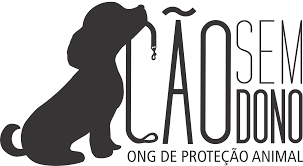

Todo animal merece um lar e quem cuide dele.
Somos voluntários que resgatam cães e gatos em situação de rua, cuidamos deles e ajudamos a encontrar uma família. Entre na equipe ou ajude com uma doação.
Quero ser voluntário Como doar
Como você pode ajudar
Seja voluntário
Resgate, lar temporário, eventos de adoção ou logística. Escolha onde pode ajudar.
Faça uma doação
Ração, medicamentos, cobertores ou qualquer valor por Pix.
Divulgue
Compartilhe os animais que buscam um lar. Uma indicação pode mudar uma vida.
Sobre a organização
A Pata Voluntária realiza resgates, arrecadação de doações e feiras de adoção, além de apoiar projetos educativos sobre guarda responsável. Nosso objetivo é fortalecer a comunidade por meio do trabalho voluntário.
Fale conosco
Rua dos Carijós, 25, Centro
Belo Horizonte/MG
Telefone: (31) 91234-5678
E-mail: contato@patavoluntaria.org.br